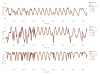

A number of web-based tools for ArduPilot log and parameter review. These tools operate on the client side, no data is uploaded to any server at any time.
Many of the tools have a "Open In" button, this allows a log that has been opened in one tool to be transferred to another, the selected tool will be opened in a new tab and the log loaded.

|
Log Finder
A tool load and sort directories of logs. Note that directory read is not supported by all browsers. Logs are sorted by the unique hardware ID of the flight controller. Parameter changes are tracked between logs.
Open in links allow files to be easily opened in any of the other tools.
|

|
UAV Log viewer
General purpose ArduPilot log review with 3D flight visualization.
|
|
|
Hardware Report
Provides a overview of connected hardware from a parameter file or log. If a log is used more information can be provided, such as sensor health status and exact firmware version. A range of options are available to extract parameters from logs, all, only changed or minimal removing calibration parameters.
Includes visualization for sensor position offsets.
|
|

|
MAGFit
Calibrate compass from flight log. This tool fits the logged magnetometer data to the world magnetic model providing offsets, iron correction, scale, motor compensation and checking orientation.
|

|
Filter Review
Gyro noise and filter configuration tool. Uses raw or batch IMU logs to show the vehicles noise profile. Filters can are applied logged pre-filter data to see the effect without the need to fly again.
|

|
PID Review
Review PID tune in the frequency domain. Step response estimate is generated. Results are split based on parameter changes.
|

|
Filter Tool
Bode plot tool to give insight into gyro low pass and notch filter setup. This tool visualizes the attenuation and phase lag of a filter setup loaded from a parameter file.
For filter setup the FilterReview tool it is recommended it provides the same bode plot feedback. This filter tool allows the attenuation and phase lag of each filter to be plotted individually, something which the filter reivew tool cannot do.
This tool also provides a estimated response for the rate PID gains.
|

|
Work in progress tools
The tools that are a work in progress, they are likely to be a little rough.
|